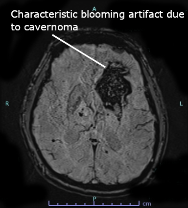

Ficha del catálogo
Malformación cavernosa cerebral
- Sistema
- Nervioso
- Modalidad
- RM
- Región
- Encéfalo supratentorial y tronco del encéfalo
- Dificultad
- Intermedio
La malformación cavernosa es una lesión vascular de bajo flujo formada por sinusoides dilatados sin parénquima interpuesto, con tendencia al sangrado repetido de escasa magnitud. Puede ser un hallazgo incidental o producir crisis convulsivas y déficit focal, sobre todo cuando asienta en el tronco del encéfalo.
Técnica
Resonancia magnética con T1, T2, FLAIR y secuencia sensible a susceptibilidad magnética, que es la que mejor detecta las lesiones pequeñas y las formas múltiples. El contraste aporta poco salvo para identificar una anomalía venosa asociada.
Qué observar
- Lesión con núcleo heterogéneo en palomita de maíz por productos hemáticos de distinta edad
- Anillo periférico hipointenso completo de hemosiderina
- Ausencia de edema y de efecto de masa salvo tras sangrado reciente
- Ausencia de vacíos de flujo arteriales
- Anomalía del desarrollo venoso adyacente
- Número de lesiones en la secuencia de susceptibilidad, que orienta a formas familiares
Hallazgos
Lesión bien delimitada con centro de señal mixta en T1 y T2 por hemorragias de distinta antigüedad, rodeada de un anillo hipointenso continuo de hemosiderina que se magnifica en las secuencias de susceptibilidad. No hay edema perilesional en ausencia de sangrado reciente ni vasos nutricios de alto flujo. En las formas múltiples se identifican numerosos focos puntiformes de pérdida de señal repartidos por ambos hemisferios.
Perlas
La secuencia de susceptibilidad multiplica el número de lesiones visibles y convierte un cavernoma aparentemente aislado en una enfermedad multifocal, hallazgo que orienta a forma familiar y aconseja valorar a los familiares. La coexistencia de una anomalía del desarrollo venoso es muy frecuente y debe respetarse durante la cirugía porque drena parénquima sano.
Diagnóstico diferencial
- Metástasis hemorrágica
- Presenta edema perilesional y realce nodular, con anillo de hemosiderina incompleto y crecimiento en los controles.
- Malformación arteriovenosa pequeña
- Muestra vacíos de flujo, arterias aferentes y relleno venoso precoz en la angiografía.
- Microsangrados por angiopatía amiloide o por hipertensión
- Son focos puntiformes sin núcleo heterogéneo, con distribución lobar o profunda característica según la causa.
- Lesión axonal difusa hemorrágica
- Contexto traumático agudo, con focos en unión corticosubcortical, cuerpo calloso y tronco dorsolateral.
Simuladores
- Calcificaciones parenquimatosas antiguas
- Depósito de hierro fisiológico en los ganglios basales
- Artefacto de susceptibilidad junto a la base del cráneo y a los senos paranasales
Por modalidad
- TC
- Puede mostrar una lesión hiperdensa o calcificada, pero tiene baja sensibilidad y no permite caracterizarla.
- RM
- Es diagnóstica por el patrón de productos hemáticos y por el anillo de hemosiderina, y cuantifica el número de lesiones.
Protocolo
Encéfalo con T1, T2, FLAIR y susceptibilidad de alta resolución; en lesiones del tronco conviene añadir cortes finos en los planos coronal y sagital para valorar la relación con las vías y la superficie de abordaje.
Clasificación
Se describen por su aspecto en resonancia, con formas de sangrado subagudo, formas clásicas de núcleo heterogéneo y anillo completo, lesiones pequeñas de señal homogéneamente baja y focos puntiformes visibles solo en secuencias de susceptibilidad. El seguimiento se basa en la aparición de sangrado sintomático más que en cambios sutiles de tamaño.
Errores frecuentes
- No incluir secuencia de susceptibilidad y subestimar el número de lesiones
- Confundir el anillo de hemosiderina con calcificación en tomografía
- No informar la anomalía venosa asociada, con riesgo de infarto venoso quirúrgico

cavernoma malformación cavernosa hemosiderina susceptibilidad magnética anomalía venosa epilepsia